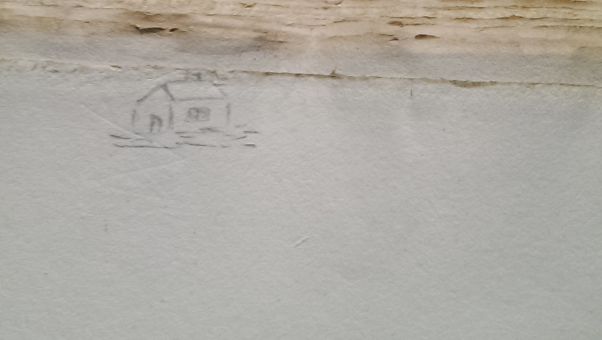

1 / 5

A sketch of Thoreau’s home at Walden Pond.
2 / 5

A sketch of an engraved portrait, perhaps a military figure.
3 / 5

Arithmetic calculation done by Emerson.
4 / 5

This is a typical Emerson doodle; there are many in his journals and books.
5 / 5

These are typical Emerson footnotes. The check mark identifies important passages.